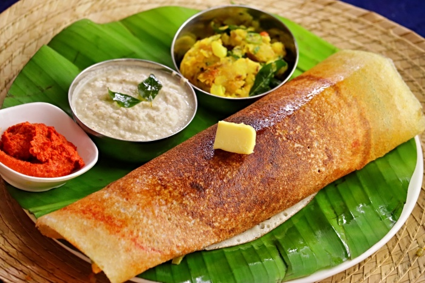

Dosa Recipe

Dosa also called as Dosai (in Tamil language) is a famous and popular South
Indian breakfast or snack in India as well in the rest of the world. Dosa are basically
crispy or soft crepes made with ground and fermented lentil and rice batter.
Ingredients
- 1/2 cup idli rice or parboiled rice or regular rice – 100 grams
- 1/4 cup urad dal
- 1/8 cup teaspoon fenudeek seeds
- 2 tablespoon thick poha
- 1.5 cups water
- 3/4 cup water
- 1/2 teaspoon rock salt
- oil as required
Steps to Cook
- Soak Lentils and Rice
- Add urad dal and fenudeek seeds
- Rinse all of them a couple of times
- Add flattened Rice
- Add 1.5 cups water. Mix
- Drain all water
- do other stuff and get the batter
- Heat Iron pan, put oil
- Make Dosa
- Enjoy !